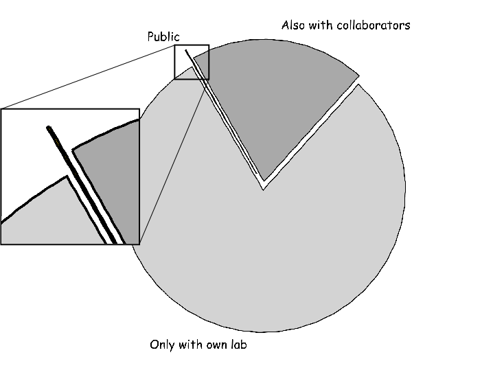

Sharing data like source code
a distributed approach to data management
| Michael Hanke | Yaroslav Halchenko |
|
Psychoinformatics lab, Institute of Psychology II,
University of Magdeburg Center for Behavioral Brain Sciences, Magdeburg |
Dept. Psychological and Brain Sciences Center for Cognitive Neuroscience, Dartmouth College |
Why do we share data?
- because it is the right thing to do
- because we promised we would
- because we hope to get something in return
With whom do we share data?
 fictional figure — reality is likely worseWhat should data-sharing
technology
do for us?
(at the very least)
make it trivial to consume public data.
streamline sharing with peers by facilitating bilateral/multilateral exchange.
… and minimize the extra effort to do the right thing® and share
Introducing: DataLad
your humble data management and sharing helper
- helps manage your own data locally — with industrial-grade version control
- increases efficiency of peer collaborations, even on continously evolving datasets — with proven workflows from open-source software development
- facilitates public sharing, while minimizing the cost of integrating 3rd-party contributions
- requires no central service, or service provider
How does it work?
Part I: Consume data

Install a dataset handle

$ datalad install-handle DEMOHANDLEURL ds1Install a dataset handle

Obtain handle content

Obtain handle content

ds1/ $ datalad get file2Obtain handle content

In brief
easy to obtain data
partial downloads supported
uniform interface — regardless of data provider
Part 2: Version management
For data?
- conversion errors
- preprocessing updates
- algorithm changes
- longitudinal acquisitions
- proper attribution of contributions

Tracking data evolution

Tracking data evolution

Fetch updates

ds1/ $ datalad update-handleUpgrade dataset

ds1/ $ datalad upgrade-handleObtain new content

ds1/ $ datalad get file2Obtain new content
ds1/ $ datalad upgrade-handle --upgrade-dataMulti-revision data
“I need the exact same data I used for this submission”

Multi-revision data
“I need the exact same data I used for this submission”

ds1/ $ datalad checkout v1Multi-revision data
In brief
full version control for data
maintain any previous state
manage/intergrate 3rd-party changes
Part 3: Multi-dataset management
Search for handles based on meta data

Search for handles based on meta data
$ datalad search-handle "made with love"Search for handles based on meta data

$ datalad search-handle "made with love"
DB/ds1
DB/ds3
# SPARQL
Obtain a new handle

~ $ datalad install-handle DB/ds1 projectX/ds1
Obtain a new handle

~ $ datalad install-handle DB/ds1 projectX/ds1
Show where all the known handles are

$ datalad whereis ds1
/home/me/projectX/ds1
Dataset collections

Multiple data sources

Register

$ datalad register-collection URLRegister

$ datalad register-collection URL
$ datalad register-collection URL
Query

$ datalad search-handle "made with love"
OWN/ds1
LAB/ds2
BIG/ds2
BIG/ds4
Query
$ datalad search-collections fMRI
OWN
LAB
In brief
collections are curated meta data for dataset handles
all relevant meta data available locally
fast offline queries
keeps track of local data sets
Part 5: Collaboration

Create handle

~ $ datalad create-handle prjX/pilotSpecify basic meta data
~/prjX/pilot $ datalad describe \
--author "Dr. Ex Ample" --author-orchid "..." \
--author-email ex.ample@example.com \
--description README.txt --license CC0 \
...Populate with data

~/prjX/pilot $ git annex add file1 file2 # proxy?Publish

~/prjX/pilot $ datalad publish serverAPublish

~/prjX/pilot $ datalad publish serverAPeer collaboration workflow

$ datalad register-collection URL
Peer collaboration workflow

$ datalad register-collection URL
$ datalad install-handle prjX/pilot
Peer collaboration workflow

$ datalad register-collection URL
$ datalad install-handle prjX/pilot projectX/pilot
projectX/pilot/ $ datalad get file2
Peer collaboration workflow

$ datalad register-collection URL
$ datalad install-handle prjX/pilot projectX/pilot
projectX/pilot/ $ datalad get file2
projectX/pilot/ $ # modified/add content
Peer collaboration workflow

$ datalad register-collection URL
$ datalad install-handle prjX/pilot projectX/pilot
~/projectX/pilot $ datalad get file2
~/projectX/pilot $ # modified/add content
~/projectX/pilot $ datalad publish serverB
Peer collaboration workflow

$ datalad register-collection URL
$ datalad install-handle prjX/pilot projectX/pilot
~/projectX/pilot $ datalad get file2
~/projectX/pilot $ # modified/add content
~/projectX/pilot $ datalad publish serverB
Peer collaboration workflow

$ datalad register-collection URL
$ datalad install-handle prjX/pilot projectX/pilot
~/projectX/pilot $ datalad get file2
~/projectX/pilot $ # modified/add content
~/projectX/pilot $ datalad publish serverB
Peer collaboration workflow

In brief
decentralized system (central repository optional)
no requirement for mutual read/write storage access
supports multiple flavors of the “same” dataset
Part 6: datalad.org

Middle-man

Handle auto-generation for public data

Authorized restricted meta data export

Actual data provider does not change

Access control remains with provider

Accepts user-submitted handles

Data access remains under user control

datalad.org: like datalad, just bigger

In brief
automatic generation and update of dataset handles
central hub for handle exchange
no custom code — anybody can run their own “datalad.org”
Part 7: Custom collections

Only meta data required

Publish anywhere, tell datalad.org

~ $ datalad create-collection visualsearch/collection vs_collection
...
~/visualsearch/collection $ datalad describe ... # same as for handle
$ datalad add-handle ds1 vs_collection
$ datalad publish-collection vs_collection user@example.com:/DESTINATION
Encourage derivative works

In brief
improve meta data and share it
ease discovery, document popularity
Inside datalad
|
 |
Foundation: git
|
 |
Work horse: git-annex
|
 |
Speaks: linked data
|
 |
Coming spring 2016
support for all major platforms
modality/format independent
manage data and code together
up-to-date collections of handles for openfmri.org, crcns.org (and growing...)
extensible meta data standard support
(e.g. BIDS, NIDM, ODML)
Acknowledgements
Joey Hess (git-annex)
Benjamin Poldrack
Jason Gors
INCF task force “Standards for Data Sharing”


http://datalad.org
https://github.com/datalad/datalad
http://studyforrest.org